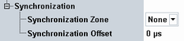

The parameters in this section configure the synchronization to other signaling applications.

Select the same synchronization zone in all signaling applications that you want to synchronize. "None" means that the application is not synchronized to other signaling applications.
Synchronizing signaling applications means synchronizing the used system time. This feature is useful, for example, for evaluation of message logs, because the time stamps in the logs are synchronized.
Synchronizing two NB-IoT signaling applications means also synchronizing the used system frame numbers.
Remote command:Configures the timing offset at cell start, relative to the time zone.
Without offset, the cell signal starts with system frame number 0 and a system time according to the time zone. With an offset, the cell starts with system frame number 0 plus the offset and a system time according to the time zone plus the offset.
Remote command: